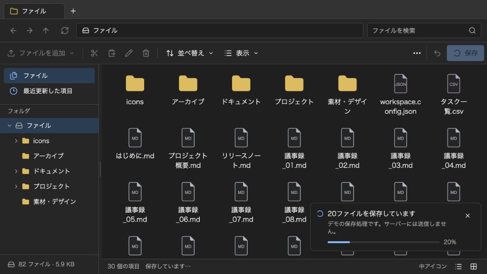
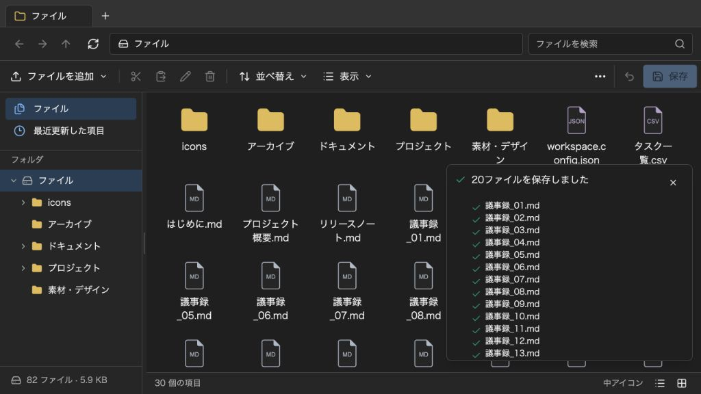
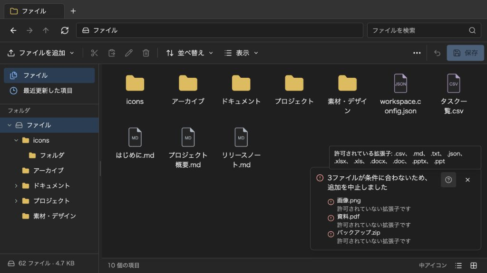
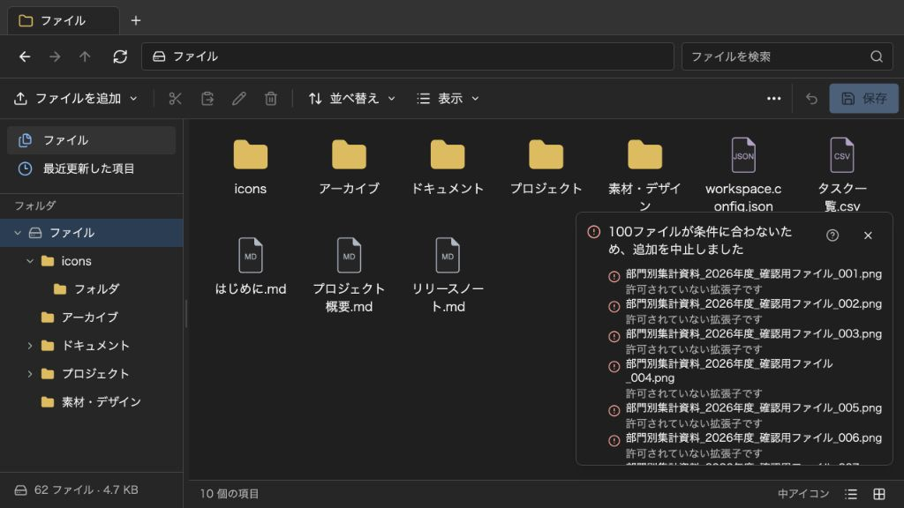

@likex/explorer
通知の表示
親から処理結果を表示します。ファイル一覧をまとめ、進捗から完了まで同じ通知を更新できます。
画面例を見る ↓親アプリの処理結果を、Explorer右下の通知領域へ表示できます。ref から notify() を呼び、ファイルごとの結果は1つの通知の details にまとめます。成功の行にはチェック、失敗の行にはエラーのアイコンが付きます。
通知を送る#
"use client";
import { useRef } from "react";
import Explorer, { type ExplorerHandle } from "@likex/explorer";
import "@likex/explorer/styles.css";
export default function Files() {
const explorerRef = useRef<ExplorerHandle>(null);
return (
<>
<button onClick={() => explorerRef.current?.notify({
kind: "success",
message: "2ファイルのアップロードが完了しました",
details: [
{ kind: "success", message: "議事録.md" },
{ kind: "success", message: "売上.csv" },
],
})}>
通知の表示例
</button>
<Explorer ref={explorerRef} initialEntries={[]} style={{ height: 640 }} />
</>
);
}この例は表示だけを確認するものです。実際のアップロードは行いません。notify() はデータの変更・保存・ファイル転送を実行せず、読み取り専用でも使えます。
API#
ExplorerHandle、ExplorerNotification は公開入口からimportできます。
type ExplorerNotification = Readonly<{
id?: string;
message: string;
description?: string;
details?: readonly Readonly<{
message: string;
kind?: "success" | "error" | "info" | "progress";
description?: string;
}>[];
hint?: string;
persistent?: boolean;
} & (
| { kind: "progress"; progress?: number }
| { kind: "success" | "error" | "info"; progress?: never }
)>;
type ExplorerHandle = Readonly<{
notify: (notification: ExplorerNotification) => string;
dismissNotification: (id: string) => void;
clearNotifications: () => void;
}>;| 項目 | 用途 |
|---|---|
id | 同じ処理の表示を更新する識別子。省略時は生成し、notify() の戻り値で受け取れます。同じIDで送ると表示順を保って既存の通知を全置換します。前の details などは引き継ぎません。 |
kind | 通知全体のアイコン。success は成功、error は失敗、info は案内、progress は処理中のスピナーです。 |
progress | kind: "progress" の場合だけ指定できる0〜100の進捗率。省略時は割合を示さず、スピナーだけを表示します。範囲外の有限数は0〜100に収め、NaN・Infinityは割合なしとして扱います。 |
message | 通知の見出し。例:「8ファイルのアップロードが完了しました」。 |
description | 通知全体に共通する補足。ファイルごとに同じ説明を繰り返さず、ここへまとめます。 |
details | ファイルごとの名前・結果・理由の一覧。各行の kind は個別の結果を示し、省略時は行のアイコンを表示しません。 |
hint | 情報アイコンにマウスを重ねるかフォーカスを当てて確認できる補足。クリックで表示を保持できます。許可拡張子など、常時表示する必要のない情報に使います。 |
persistent | 既定は自動で消える通知。true を指定すると、閉じる操作やAPIからの削除まで保持します。kind: "progress" はこの指定にかかわらず自動では消えません。 |
message、description、hint は文字列です。HTMLや独自のReact要素は受け付けません。アイコンは kind で付くため、ファイル名に ✅ などを加える必要はありません。
表示件数と閉じ方#
通知は右下の1つのパネルに表示します。複数件あるときだけ件数と「すべて閉じる」が現れ、長い一覧はパネル内でスクロールできます。通常の通知は5秒で消えます。確認が必要な失敗や長い結果一覧には persistent: true を指定してください。同じIDを更新すると、新しい内容と persistent の指定で表示し直します。
保持できる外部通知は最大50件で、上限を超えると古い通知から除去します。persistent: true も件数上限の対象です。ファイルが100件ある場合でも100件の通知を送らず、1件の通知に100行の details を渡してください。
const id = explorerRef.current?.notify({
kind: "progress",
message: "ファイルを準備しています",
});
// 処理を取り消した場合などに、対応する通知だけを閉じます。
if (id) explorerRef.current?.dismissNotification(id);
// 親から送った通知をまとめて閉じます。
explorerRef.current?.clearNotifications();保存結果をファイル一覧にまとめる#
BlobやS3への保存は親アプリの onSave で行います。保存関数が成功した結果を返してから、完了したファイル名を1つの通知にまとめます。次の persist は利用先で実装する関数の契約例です。
"use client";
import { useRef } from "react";
import Explorer, {
type ExplorerEntry,
type ExplorerHandle,
type ExplorerSavePayload,
} from "@likex/explorer";
type SaveResult = {
entries: readonly ExplorerEntry[];
uploadedNames: readonly string[];
};
type Props = {
initialEntries: readonly ExplorerEntry[];
persist: (payload: ExplorerSavePayload) => Promise<SaveResult>;
};
export function FileWorkspace({ initialEntries, persist }: Props) {
const explorerRef = useRef<ExplorerHandle>(null);
return (
<Explorer
ref={explorerRef}
initialEntries={initialEntries}
style={{ height: 640 }}
onSave={async payload => {
const result = await persist(payload);
if (result.uploadedNames.length > 0) {
explorerRef.current?.notify({
id: "save-result",
kind: "success",
message: `${result.uploadedNames.length}ファイルのアップロードが完了しました`,
details: result.uploadedNames.map(name => ({
kind: "success" as const,
message: name,
})),
});
}
return result.entries;
}}
/>
);
}uploadedNames には、親が実際に転送の完了を確認したファイルだけを含めます。変更のなかったファイルや、移動だけで本体の転送を省略したファイルは、この「アップロード完了」の一覧に含めません。保存全体の結果を知らせる場合は、見出しを「保存が完了しました」などに変えます。
保存処理の間に親が notify() で結果や進捗を表示した場合、内蔵の「保存しました」は重ねて表示しません。親から通知を送らなければ、従来どおり内蔵の完了通知を表示します。
保存に失敗すると persist の例外が onSave へ伝わり、Explorerが保存エラーを表示して下書きを保持します。この例では、同じ失敗メッセージを notify() からも送ることはしません。途中まで転送に成功した場合の再試行や整合性の管理も、親の保存処理で扱います。
進捗は同じ通知を更新する#
親が取得した進捗を表示したい場合は、処理ごとにIDを決めて使い回します。準備中のスピナー、進捗率、完了のチェックを、同じ場所で順に表示できます。
const id = "upload-request-42";
explorerRef.current?.notify({
id,
kind: "progress",
message: "アップロードを準備しています",
});
// 親の転送処理から進捗を受け取った時点で更新します。
explorerRef.current?.notify({
id,
kind: "progress",
message: "ファイルをアップロードしています",
progress: 40,
});
// successに置き換わるとスピナーがチェックになり、5秒後に消えます。
explorerRef.current?.notify({
id,
kind: "success",
message: "20ファイルのアップロードが完了しました",
});kind: "progress" は処理中のため自動では消えません。処理が失敗した場合は同じIDで kind: "error" に置き換え、取り消した場合は dismissNotification(id) で閉じます。1行単位の details.kind: "progress" でもスピナーを表示できますが、行ごとの進捗率は指定しません。
バイト単位の細かな変化はまとめ、割合や件数が変わった時点などに更新すると、読み上げや表示の切り替わりを抑えられます。別の処理を同時に表示する場合は、別のIDを使います。
失敗理由と共通の補足を分ける#
次は親が行う独自の事前チェックで、失敗理由をファイルごとに表示する例です。許可拡張子の一覧は hint に1回だけ渡します。
explorerRef.current?.notify({
kind: "error",
message: "2ファイルを送信できませんでした",
details: [
{
kind: "error",
message: "画像.png",
description: "許可されていない拡張子です",
},
{
kind: "error",
message: "資料.pdf",
description: "ファイルサイズが20 MiBを超えています",
},
],
hint: "許可する拡張子: .pdf、.md、.csv",
persistent: true,
});Explorer内蔵のアップロード制限も同じ考え方で、ファイル名と理由を一覧にし、許可拡張子は情報アイコンの補足へまとめます。onEvent で同じ制約違反を受け取っても、再び notify() で送る必要はありません。アップロード制限を参照してください。
ウィンドウとイベントの関係#
Explorer・ExplorerPopup は同じ ref APIを使います。親から送った通知は、同じワークスペースのメイン画面と、そこから切り離した子・孫ウィンドウに共有します。別にマウントしたExplorerや別ページのExplorerとは共有しません。内蔵のファイル操作による通知は、その操作元のビューに表示します。
コンポーネントをアンマウントすると ref.current は null になります。非同期処理後も explorerRef.current?.notify(...) のように、その時点の参照から呼んでください。アンマウント済みのハンドルを保持していても、呼び出しで画面を復元したり別のExplorerへ通知したりはしません。ワークスペースを切り替える場合は、親の処理も取り消すか、結果の対象が現在のワークスペースかを確認します。
onEvent はExplorerから親への操作・状態の通知です。ref.notify() は親から画面へのメッセージ表示で、方向も用途も異なります。外部通知を送ることで onEvent の保存成功などが発火することはありません。操作・状態イベントと保存の契約も参照してください。
デモで確認する#
リポジトリで npm run dev を起動したら、通知のデモを開きます。Markdownなど許可されたファイルを複数追加し、「保存」を押すと、スピナー、進捗率、完了したファイル名のチェック一覧を順に確認できます。
このデモは親の onSave がメモリへ保存する処理に待機時間を加えたものです。サーバーへの通信は行いません。notificationDemo=1 を付けない通常のデモには、この待機時間を入れていません。
画面例
{kind=link}

{kind=link}

{kind=link}

{kind=link}
